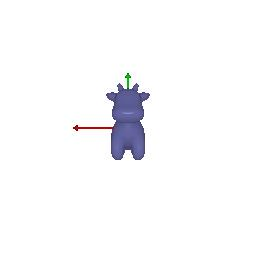
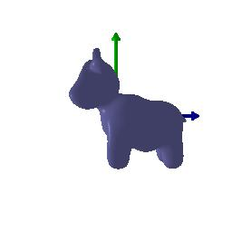

*CMSC848F - 3D Rendering with PyTorch3D*
*Submitted By: Akashkumar Parmar*
Rendering your first mesh
--------------------------------------------------------------------------------
Practicing with Cameras
===============================================================================
360-degree Renders
--------------------------------------------------------------------------------
Re-creating the Dolly Zoom
--------------------------------------------------------------------------------
Practicing with Meshes
===============================================================================
Constructing a Tetrahedron
--------------------------------------------------------------------------------
In the .gif file, a tetrahedron has been shown. It consists of 4 vertices and 4 triangular faces.
Constructing a Cube
--------------------------------------------------------------------------------
In the .gif file, a cube has been shown. It consists of 8 vertices and 12 triangular faces (i.e., 6 square faces).
Re-texturing a mesh
===============================================================================
*color1* = torch.tensor([1, 0, 0])
*color2* = torch.tensor([0, 0, 0])
Here the chosen colors are Red and Black. The .gif shows the smooth transition from Red to Black.
Camera Transformations
===============================================================================
*R_relative* :
- A rotation matrix that represents the rotation of the camera around the mesh object.
- By changing its value, we can relatively transform the object's orientation.
*T_relative* :
- A translation vector that represents the linear translation of the camera with respect to the mesh object.
- By changing its value, we can relatively change object's linear distance from the camera.
Transformation 1
--------------------------------------------------------------------------------
*R_relative* = + 90° @ z-axis
*T_relative* = No translation
Transformation 2
--------------------------------------------------------------------------------
*R_relative* = No rotation
*T_relative* = Translation of 3 units along z-axis

Pose 3
--------------------------------------------------------------------------------
*R_relative* = No rotation
*T_relative* = Translation of 0.5 units @ X - Axis,
Translation of -0.5 units @ Y - Axis,
Translation of 0.5 units @ Z - Axis
Pose 4
--------------------------------------------------------------------------------
*R_relative* = 90 degree rotation about y-axis
*T_relative* = Translation of 3 units @ X - Axis
Translation of 3 units @ Z - Axis

Rendering Generic 3D Representations
===============================================================================
Rendering Point Clouds from RGB-D Images
--------------------------------------------------------------------------------
Parametric Functions
--------------------------------------------------------------------------------
Implicit Surfaces
--------------------------------------------------------------------------------
Rendering as a point cloud and mesh have their own advantages and their trade-offs with rendering speed, quality, ease of use and memory usage, etc. The usage depends upon the requirements.
*1. Rendering Speed:*
- In terms of rendering speed, point clouds are faster than meshes. When meshes are higly densed, it requires more computational resources and time.
*2. Rendering Quality:*
- In terms of quality, meshes generate triangle meshes even for the complex surfaces and represent more details and have better quality.
*3. Ease of Use:*
- Point clouds are esier to create and manipulate, while meshes require more complex tasks for mesh generation, which leads to difficulty in uasge from a user's perspective.
*4. Memory Usage:*
- Point clouds are memory efficient as they only store the coordinates, whereas meshes store edge and face connectivity information, which stores more memory.
Besides, based on availability of GPU, CPU and memory, some hardware configurations work better for meshes and others work for point clouds. Also, considering the applications, Point clouds are used in LIDAR, 3D scanning, AR/VR applications, and meshes are used for Computer graphics, FEA, 3D Modelings.
Based on the requirements, appropriately point cloud or meshes are chosen considering their own positives and negatives.